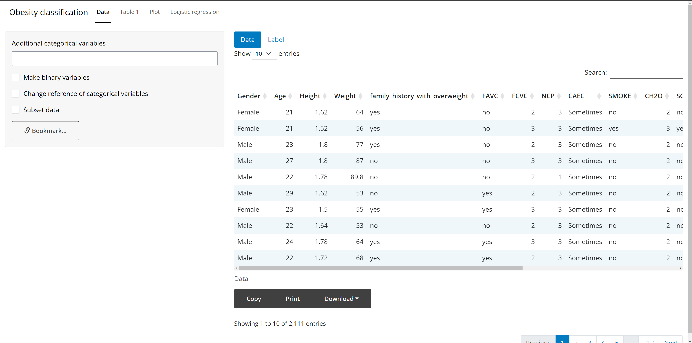
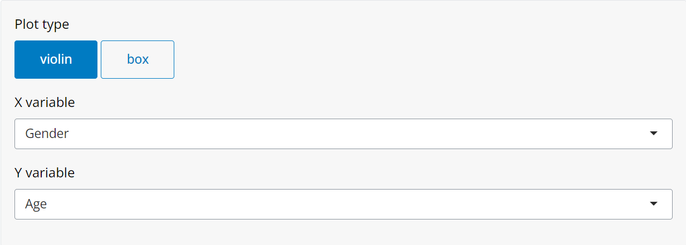

library(shiny)
ui <- navbarPage(title = "Obesity classification",
tabPanel(title = "Data", ...),
...
)
server <- function(input, ouput) {
...
}
shinyApp(ui = ui, server = server)개요
기본 shiny app은 스타일이 아쉽습니다. 디자인은 신경 쓰지 않고 기능에만 집중하시는 분들에게는 큰 문제가 되지 않지만 디자인도 서비스에서 매우 중요한 역할을 한다는 점은 부정할 수 없습니다. 이번 포스트에서는 간단하게 shiny app을 꾸밀 수 있는 방법을 소개합니다.
기본 shiny app
생활습관과 신체조건, 그리고 비만도를 포함하는 데이터를 가지고 기본적인 shiny app을 만든 후 하나씩 다듬어보겠습니다.

차라투에서 서비스하는 대부분의 웹은 위와 같은 형식으로 이루어져있습니다.
shiny의 navbarPage와 tabPanel로 웹의 상단에 항목별 탭을 만들어 각 탭의 왼쪽에서 변수를 선택하고 중앙-오른쪽에서 그래프, 테이블 등의 분석 결과를 확인할 수 있습니다.
bslib
page_navbar, nav_panel
전반적인 테마를 바꾸기 위해 bslib을 불러옵니다. bslib 패키지가 설치되어있지 않다면 install.packages("bslib")을 입력하여 패키지를 설치합니다. 그리고 navbarPage를 page_navbar로, tabPanel을 nav_panel로 바꿔줍니다. 두 함수 모두 shiny 패키지의 함수와 기능은 동일하지만 스타일을 커스텀하기에 더 적합합니다.

전반적으로 버튼의 디자인이 바뀌었고 선택된 탭을 표시하는 방법도 바뀌었습니다.
page_navbar함수에는 theme = bs_theme(version = 5)가 기본값으로 적용됩니다. 필요에 따라 해당 인자를 조정하여 부트스트랩 버전을 변경할 수 있습니다.
차라투 홈페이지와 shiny app의 내비게이션 바의 배경색을 동일하게 하여 통일감을 주고 글자크기도 변경해보겠습니다.
웹에서 마우스 오른쪽 버튼을 눌러 ’페이지 소스 보기’를 클릭하면 차라투 홈페이지 내비게이션 바 색상의 hex color code는 “#051F20”이고 shiny app의 내비게이션 바 타이틀의 클래스는 navbar-brand, 각 탭의 클래스는 nav-link인 것을 확인할 수 있습니다. 여기서 알아낸 것들을 아래와 같이 적용해보겠습니다.
library(shiny); library(bslib)
ui <- page_navbar(title = "Obesity classification",
bg = "#051F20",
header = tags$head(
tags$style(HTML("
.navbar-brand {
font-size: 30px;
}
.nav-link {
font-size: 18px;
}")
)
),
nav_panel(title = "Data"),
...
)
server <- function(input, ouput) {
...
}
shinyApp(ui = ui, server = server)
설정했던 대로 내비게이션 바의 배경색과 글자크기가 바뀐 것을 확인할 수 있습니다.
nav_spacer, nav_menu
여기를 참고해서 내비게이션 바의 우측에 드롭다운 메뉴로 회사 홈페이지와 커뮤니티 페이지 바로가기를 만들겠습니다.
library(shiny); library(bslib); library(shinyWidgets)
link_zarathu <- tags$a(
tags$div(
style = "display: inline-block; background-color: #white;",
tags$img(src = "https://raw.githubusercontent.com/zarathucorp/blog/master/img/logo_favicon.png",
height = "35px", width = "35px")
),
"차라투 홈페이지",
href = "https://www.zarathu.com/",
target = "_blank"
)
link_community <- tags$a(
tags$div(
style = "display: inline-block; background-color: #white;",
tags$img(src = "https://raw.githubusercontent.com/zarathucorp/zarathu/master/public/img/about/logo.jpg",
height = "40px", width = "40px")
),
"연구지원 신청",
href = "https://community.zarathu.com/",
target = "_blank"
)
ui <- page_navbar(...,
nav_panel(title = "Logistic regression",
...),
nav_spacer(),
nav_menu(
title = "Links",
align = "right",
nav_item(link_zarathu),
nav_item(link_community)
)
)
tags$div()의 인자들을 가지고 로고, 글자크기, 배경색 등을 필요에 맞게 조절할 수 있습니다.
shinyWidgets
이번에는 shinyWidgets 패키지를 가지고 input 버튼들을 바꾸어보겠습니다.
radioGroupButtons
shiny의 radioButtons를 shinyWidgets의 radioGroupButtons로 다음과 같이 박스로 바꾸어 선택된 박스에 색이 채워지도록 할 수 있습니다.
library(shiny); library(bslib); library(shinyWidgets)
ui <- page_navbar(...,
nav_panel(title = "Plot",
sidebarLayout(
sidebarPanel(
# radioButtons(inputId = "plot_type", label = "Plot type",
# choices = c("violin", "box"), inline = TRUE),
radioGroupButtons(inputId = "plot_type", label = "Plot type",
choices = c("violin", "box"), direction = "horizontal",
individual = TRUE),
...
),
mainPanel(...)
)
),
...
)
shiny::radioButtons

shinyWidgets::radioGroupButtons
당연히 세 개 이상의 버튼도 만들 수 있습니다.
virtualSelectInput
shiny의 selectInput을 shinyWidgets의 virtualSelectInput으로 바꿔보겠습니다.
library(shiny); library(bslib); library(shinyWidgets)
varlist <- list(
base = c("Gender", "Age", "Height", "Weight", "family_history_with_overweight"),
condition = c("FAVC", "FCVC", "NCP", "CAEC", "SMOKE", "CH2O", "SCC", "FAF", "TUE", "CALC", "MTRANS"),
outcome = "NObeyesdad"
)
ui <- page_navbar(...,
nav_panel(title = "Linear regression",
sidebarLayout(
sidebarPanel(
...,
# selectInput(inputId = "ind_var", label = "Independent variable",
# choices = list("base" = varlist$base, "condition" = varlist$condition),
# multiple = TRUE),
virtualSelectInput(inputId = "ind_var", label = "Independent variable",
choices = list("base" = varlist$base, "condition" = varlist$condition),
multiple = TRUE, search = TRUE, showValueAsTags = TRUE)
),
mainPanel(...)
)
),
...
)
shiny::selectInput

shinyWidgets::virtualSelectInput
기존의 seletInput과는 다르게 전체선택/해제가 가능하고, choices인자에 리스트를 넣었을 때 카테고리별로 선택/해제가 가능하다는 점이 큰 장점으로 다가왔습니다.
vov
vov 패키지는 shiny app에 애니메이션 효과를 줄 수 있는 패키지입니다.
install.packages("vov")로 패키지를 설치하고 불러온 후 다른 탭을 선택할때마다 화면이 부드럽게 전환되도록 fade_in함수를 사용하겠습니다.
vov패키지에서 제공하는 애니메이션 효과를 사용하려면 page_navbar함수 안에 use_vov함수를 실행하고 애니메이션 효과가 다타나길 원하는 UI를 애니메이션 함수로 감쌉니다.
아래와 같이 다른 탭을 누를때마다 fade in 효과가 적용된 것을 확인할 수 있습니다.

마치며
지금까지 여러 패키지들을 가지고 shiny app을 꾸밀 수 있는 방법을 알아보았습니다.
CSS를 조금도 모른다면 사소한 것 하나까지 커스텀하기는 힘들어 보였지만 웹 개발 관련 지식이 부족한 상태에서 보다 세련된 shiny app을 만들 수 있었습니다.
그리고 가장 중요한 점은 아이디어 또는 디자인적인 감각이라는 생각이 들었습니다. “shiny app을 꾸며보자”의 다음 단계가 “무슨 요소를, 어떻게 꾸미지?” 였는데 이런 쪽으로 세심한 편이 아니라서 고민하는 데 시간이 오래 걸렸고 결과도 썩 좋지 못했다는 생각이 들었습니다.
추후에 차라투가 서비스하는 shiny app에도 멋있는 스타일이 적용되기를 바라면서 글을 마치겠습니다.
Citation
BibTeX citation:
@online{choi2024,
author = {Choi, Heeseok},
title = {Shiny App {꾸미기}},
date = {2024-05-24},
url = {https://blog.zarathu.com/posts/2024-05-24-app-design},
langid = {en}
}
For attribution, please cite this work as:
Choi, Heeseok. 2024. “Shiny App 꾸미기.” May 24, 2024. https://blog.zarathu.com/posts/2024-05-24-app-design.